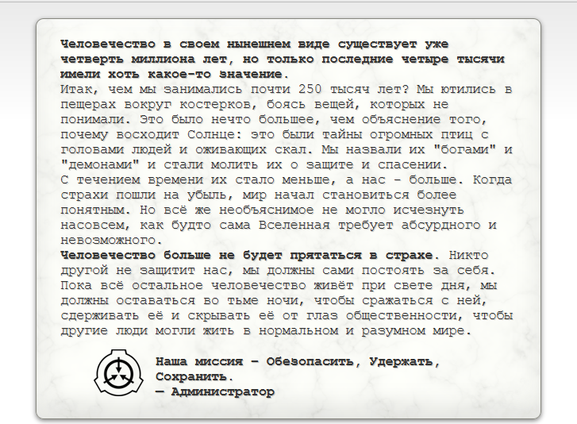

Какова позиция главы фонда относительно целей и задач организации?

Копия письма администратора с ответом на вопрос о целях организации.
Основные классы объектов
Безопасный
.jpg)
Объекты класса «Безопасный» — это аномалии, которые проще всего содержать без последствий. Эти объекты достаточно хорошо изучены для содержания без значительных затрат, либо не проявляют аномального воздействия без определённого внешнего стимула или намеренного приведения в действие. Назначение аномалии класса «Безопасный» не значит, что приведение её в действие или работа с ней не несёт угрозы.
Евклид
.jpg)
К объектам класса «Евклид» относятся недостаточно изученные или изначально непредсказуемые аномалии, надёжное содержание которых не всегда возможно или требует бо́льших затрат, чем на содержание «безопасных». Так как это достаточно широкое определение, если аномалии не подходит на один из основных классов, ей наверняка подойдёт класс «Евклид». В частности, всем аномалиям, которые можно назвать разумными, чаще всего присваивается класс не ниже «Евклида», поскольку объект, наделённый собственной волей или мышлением, по сути непредсказуем.
Кетер
.jpg)
Объекты класса «Кетер» — это аномалии, постоянное или надёжное содержание которых тяжело реализуемо и сопряжено со сложными процедурами сдерживания. Зачастую такие объекты не удаётся полноценно содержать, поскольку у Организации не хватает понимания той или иной аномалии, или же нет технологий, которые бы позволили ей противодействовать и сдерживать её. «Кетер» не всегда значит опасность, а скорее то, что объект очень сложно содержать или это требует больших затрат.
Особые условия содержания
Фонд обладает обширной базой данных об аномалиях, требующих особых условий содержания, что обычно сокращается как "ОУС". Большая часть этой информации содержит общие сведения об аномальных объектах и описания процедур, требуемых для их безопасного содержания или выполняемых в случае нарушений условий содержания и других подобных событий.
Аномалии имеют множество форм, среди них встречаются предметы, существа, места и даже явления. При постановке на содержание каждой такой аномалии присваивается один из классов, после чего она или транспортируется в одно из множества учреждений Фонда, или же, если её перемещение невозможно, содержится на месте обнаружения.
Структура организации
Совет O5
Совет O5 (Overseer Level 5 Council) — это высший руководящий орган Фонда[reference:0]. Он состоит из 13 членов, обозначаемых как O5-1 — O5-13[reference:1][reference:2]. Личности членов Совета держатся в строжайшей тайне[reference:3], а большинство сотрудников Фонда даже не подозревает об их существовании[reference:4].
Совет O5 обладает неограниченной властью и контролирует все аспекты деятельности Фонда[reference:5][reference:6]. Члены Совета имеют доступ ко всей информации Фонда, но им строго запрещено вступать в прямой контакт с аномальными объектами[reference:7]. Они редко вмешиваются в повседневные операции, фокусируясь на наиболее опасных объектах класса Кетер и стратегическом планировании[reference:8]. У Совета O5 есть собственная Мобильная Оперативная Группа — Альфа-1 «Багряная Десница», которая выполняет их прямые приказы[reference:9][reference:10].
Классы персонала
В Фонде существует строгая система уровней доступа и классификации персонала:
- Класс A (Высшее руководство): Сотрудники, имеющие наивысший уровень допуска. Им запрещено приближаться к аномальным объектам[reference:11].
- Класс B (Старший персонал): Важные сотрудники, допускаемые к объектам, прошедшим карантин[reference:12].
- Класс C (Основной персонал): Сотрудники, имеющие доступ к объектам, которые не проявляют враждебности и не представляют непосредственной угрозы[reference:13].
- Класс D (Расходный материал): Персонал, набираемый из числа заключенных, приговоренных к смерти, и используемый для проведения опасных экспериментов и работ с аномалиями[reference:14]. Им запрещен контакт с персоналом классов A и B[reference:15].
- Класс E (Временный): Временный статус, присваиваемый гражданским лицам, вовлеченным в расследование аномальной деятельности[reference:16].
Мобильные оперативные группы (МОГ / MTF)
Мобильные Оперативные Группы (Mobile Task Forces, MTF) — это элитные подразделения Фонда, состоящие из наиболее опытных сотрудников[reference:17]. Они создаются для выполнения специализированных задач, с которыми не могут справиться обычные полевые группы[reference:18].
Группы формируются по инициативе директора по оперативным группам и утверждаются Советом O5[reference:19]. Их структура и размер сильно варьируются: от небольших отрядов из 8-12 человек до полноценных батальонов[reference:20][reference:21]. В зависимости от задач МОГ делятся на типы: боевые (M), по сдерживанию (C), инженерные (G), эзотерические (E), поисковые (T) и скрытые (U)[reference:22].
Некоторые известные МОГ:
- Альфа-1 «Багряная Десница»: Личная гвардия Совета O5[reference:23].
- Альфа-4 «Пони-Экспресс»: Специализируется на отслеживании почтовых аномалий[reference:24].
- Бета-1 «Прижигатели»: Занимается вопросами внутренней безопасности и борьбы с проникновением[reference:25].
- Ню-7 «Молот»: Крупное боевое подразделение батальонного уровня[reference:26].
- Омега-7 «Ящик Пандоры»: Экспериментальная группа, сотрудничавшая с человекоподобными аномалиями; была расформирована после крупной катастрофы[reference:27].
Другие ключевые подразделения
Помимо МОГ, в структуру Фонда входит множество других департаментов и комитетов[reference:28]:
- Комитет по Этике (Ethics Committee): Контролирует действия Фонда с моральной точки зрения, чтобы минимизировать «этическую цену» операций[reference:29]. Обладает значительным влиянием и может пересматривать решения Совета O5[reference:30].
- Административный Департамент (Administrative Department): Отвечает за финансы, кадровый учет и общее управление[reference:31].
- Департамент Внешних Связей (Department of External Affairs): Обеспечивает взаимодействие с правительствами и внешним миром[reference:32].
- Служба Внутренней Безопасности (Internal Security Department): Выступает в роли внутренней полиции, защищая Фонд от шпионов и внутренних угроз[reference:33].